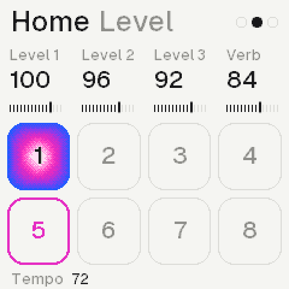
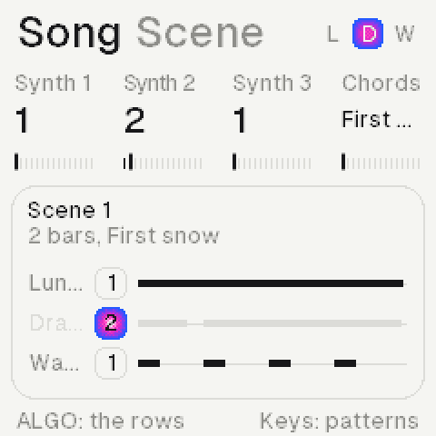
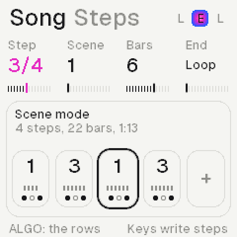
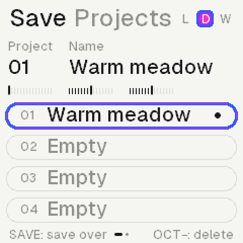
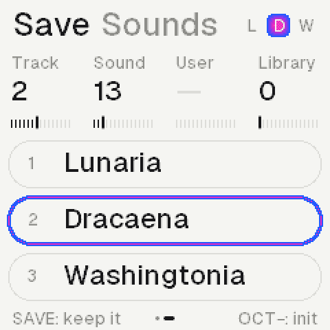

Demake turns the M‑VAVE FM‑1 into an ambient lofi machine: three synths on 64 recordings, a roll each, a chord machine, lofi effects and long reverbs.
Home: the three synths, a scene for the sound.
SynthsThree, each its own roll, length and effects
Sounds64 recordings, built in
Voices12, shared; half on the second core
Progressions16, and four of your own
VersionThe newest, on the install page
In the browser: Power on, then the panel, or these keys.
Z to /, S to 'The lower keys, F3 to A4
Q to OThe upper keys, B4 to G5
1 to =The twelve buttons, FX to REC
[ ]OCT− and OCT+
ArrowsUp and down SELECT, left and right ALGORITHM
A knobDrag it up or down, or scroll over it
Shift clickHolds a button down
In the home page's screens, once it plays, the screen is live: a page pressed opens it, a value scrolled turns its knob.
Installing
From the installer page, over USB, in Chrome or Edge on a computer.
1Plug the FM‑1 in with a cable that carries data and switch it on.
2Open Install, at the top, and press Connect; allow MIDI.
3Press Install and wait about a minute, until it says done.
4A dark screen: hold OCT− while switching on, then install again.
The same page takes the FM‑1 back to M‑VAVE's own V15.
The panel
Each button opens its page; again, its next row. K1 to K4 turn the values over them, ALGORITHM the one at the foot.
FXEffects: reverb, delay, motion, sends
SELFilter
ENVAmp: the envelope and the level
LFOLFO: a slow wave on the pitch, cutoff, level, pan or start
EDITSound: the recording; again, its layer; again, the voice
GLOGlobal: the colour, the Space, the media over the mix; the setup
HOMEHome: levels and tempo, sends to the Space, pans; the scene
ARPChord: the progression; the keys play chords
SEQRoll: this synth's own sequence
SAVEProjects and sounds; again, saved
PLAY, RECPlay the rolls and chords; record the keys as played
OCT− OCT+The octave as you let go; with a note held, delete or copy
SELECTThe synth, on every page
PRESETSThe page's rows; on Home, the synth's sound
ALGORITHMThe foot's value: on FX and GLO the row's type; on Home the rows
K1 to K4The four values on top
MASTERThe volume
Tap, againA page button opens its page; again, its next row
PRESETS, ALGOPRESETS the row, ALGORITHM its type; on Home ALGORITHM the row
Hold, then actA held key or chord: the knobs change it, OCT− deletes, OCT+ copies
Lists go roundPast the last, the first; numbers stop at their ends
The pages
The same layout on each: the title and its row, four values, a card, the foot.
Roll: a synth's notes and length.Chord: the progression, the chord now.Sound: the recording and its loop.Filter: the response, its cutoff.Amp: the envelope, its points.FX: four rows, a synth each.
Home has three rows, ALGORITHM round them; PRESETS stays the sound there.
LevelEach synth's level; K4 the tempo
SpaceEach synth's send to the Space; K4 its return
PanEach synth's place; K4 the mix's width
Keys and sounds
The keys play the synth SELECT picks; on Home, PRESETS steps through its sounds.
SELECTSynth 1, 2 or 3, on every page
PRESETSOn Home: the next recording, then your saved sounds
OCT− OCT+Two octaves down or up, as you let go
Both heldThe landscape, full screen; a knob, a page or both again: back
On ChordEach key plays a chord instead
Keys: AllChords on every page, each synth its own (Chord, Keys row); on the roll they are written
The rolls
Each synth has its own roll and length, so the three loop against each other.
The pad's 32 steps; the cursor lit.
A keyStopped, REC lit: writes at the cursor, then moves it on; REC off, it only plays
Its lengthThe last one you gave a held note (K3)
Held + K1Moves the note; K2 its pitch, K3 its length
Held + K4Nudge: later or earlier, in ms after its step
Held + ALGOIts velocity
Held + OCT−Deletes it; OCT+ copies it after itself
K1 K2The cursor, the view
K3, FollowHow it follows the chords; Free: as written
K4This synth's length, 1 to 256 steps
A clickA step to 16, a beat to 64, then a bar
PLAYPlays all three; the keys play along
REC, then PLAYReady: the first key starts it, recording
RecordedAs played: each note's timing, a strum's spacing
SEQ + OCT−Twice: clears this synth's roll
HOME + OCT−Twice: clears all three
Keys: AllA key writes its chord at the cursor; the foot names the chord there
SEQ againThe Vary row, each synth's own (SELECT: the synth)
MutateHow often a note plays another of the scale, Range steps up or down
ChanceHow often a note plays at all
EvolveOn: what Mutate moves is written in, the roll changes as it plays; Off: as written
On whatWhat it plays: its roll, the chords, or its arp's notes
SEQ a third timeThe Arp row, each synth's own
What it playsWhat reaches the synth: keys, its roll, its chords, MIDI
Up, DownHill: up and down; Valley: down and up
BounceUp and down, its ends twice
Fold, UnfoldThe outside in; the middle out
Dice, WalkAt random; a step up or down at random
Played, ChordAs you played them; all at once
Thumb, PinkyThe lowest, or the highest, between each
Rate, Octave1/32 to 1/4 of the tempo; one to four octaves
GateHow long each note holds, to legato
ALGORITHM, HoldOn: the notes stay when let go, till a new chord
A note above or below the seven rows in view leaves a mark at the roll's edge; one you write, the view goes to.
A roll written to is heard: a synth that played the chords plays its roll from then (the roll's K3, Follow, or SEQ + ALGORITHM puts it back). A roll cleared is silent, the chords it played too.
Chords
A key is a chord on Chord: the song key's chord built on it. PLAY runs the progression; four of your own after the presets.
First snow in A Aeolian.
A keyIts chord: A gives Am7, F gives Fmaj7
ALGORITHMThe progression: 16 presets, then User 1 to 4
Keys rowChord or All, each synth its own; the type: sevenths, triads, ninths, add9, sus2, sus4, 6/9, power
SEQ + ALGOHow this synth follows (the roll's K3 too): chords, key, chord, root, free, or another synth's harmony
SEQ + K2The harmony's interval: an octave below to an octave above
The first song: the pad plays the chords, the piano follows the key, the third synth the root. The card's grey line names the synth that plays them. In harmony with another synth, a synth leaves its roll and plays each note the other plays, moved on the scale; keys played on the lead are harmonized too.
Your own: on Chord, User 1 to 4, stopped, REC armed.
1On Chord, turn ALGORITHM to User 1, or start from a preset.
2Stopped, press REC: the foot says the keys write chords.
3Each key writes its chord at the cursor and moves it on.
4Hold one: K1 moves it, K2 its quality, K3 its bars, K4 its bass.
5ARP held: K1 the cursor; OCT+ prints it into the synth's roll.
Scenes and songs
Each synth has eight patterns. A scene picks one for each synth; a song strings scenes, up to 128 steps of 1 to 8 bars. HOME + SEQ opens the Song page.

HOME held: the sixteen scenes, the one playing lit.
HOME + white keyScene 1 to 16; playing, it waits for the bar
An empty sceneStarts as a copy of the one playing, its patterns shared
HOME + OCT+, a keyCopies the scene there; over one in use, the key twice
HOME + black keyMutes synth 1, 2 or 3 in the scene, and back
HOME + OCT−Twice: clears the scene's three rolls

Scene: each synth's pattern and notes.

Steps: the song, the cursor's ring.
Scene, K1 K2 K3Each synth's pattern; playing, at the bar
Scene, K4The scene's progression
Scene, a white keyThe selected synth's pattern 1 to 8
Scene, OCT+ OCT−Copies the pattern into a new one; twice, clears it
Steps, a white keyStopped, writes a step of that scene and moves on
Steps, K1 K2 K3 K4The step, its scene, its bars (1 to 8), the end
Steps, OCT− OCT+Deletes the step; copies it after itself
HOME + PLAYScene mode or song mode, on any page
PLAYIn song mode, the song; on the Song page, from the cursor
The endLoop, stop, fade out, or fade in and out
REC, PLAYOn the Song page: records it live, switch scenes with HOME held
A scene pickedWhile the song plays: leaves the song for it
Saving
Fourteen projects and thirty-two sounds, kept in the machine. The newest project opens at start.

Projects: the one open, saved and named.
SAVEProjects, the cursor on the one open
ALGORITHMProjects or Sounds
K1 or SELECTA project; the list moves past its ends
SAVE againInto an empty slot, or over the one open
A new nameMade up as it is first saved: two words
K2, K3Its name, a word each; kept as they rest
PLAY twiceOpens it; on an empty slot, a new project
A new projectNo notes, no effects, the sounds at init
OCT− twiceDeletes it

Sounds: the three tracks.
K1 or SELECTA track
K2, SoundA recording for it
K3, UserA sound you kept, whole; before the first, none
SAVEKeeps it as a new one; one picked: twice, over it
OCT− twiceOne picked: deletes it; none: init, dry
EDIT + SAVEThe same, from any page
EDIT + OCT−Init, from any page
A project is everything that plays: the sounds, the effects, the key and chords, the tempo and the rolls. Save while stopped. In the emulator, saves stay in this browser.
The sounds
Sixty-four recordings, built in: nothing to load. Home shows a landscape for the kind of sound.
SoundWhich recording (K1), or PRESETS on Home
StartWhere it starts: past its attack, for a soft one
LoopFull, once through, or Set: the region you choose
TuneIn semitones; ALGORITHM fine, in cents
LayerEDIT again: a second recording under it
VoiceEDIT again: glide, velocity, track, grit
Loop rowEDIT again: where the loop starts and how long; turned, it sets the loop
ScenesThirteen: peaks and pines, a beach, a harbour, rooms at night
NamesA plant of each sound's landscape, in Latin
Filter, envelope, LFO
Every voice has a filter and an envelope; every synth an LFO. ALGORITHM picks the filter type.
TypesLP24, LP12, HP, BP, notch, peak, vowel, off
Filter knobsCutoff, resonance, envelope, drive
DriveInto the filter: thicker, its resonance rounded
VowelThe cutoff glides through u, o, a, e, i
Amp knobsAttack, decay, sustain, release; ALGORITHM the level
Rate0.05 to 20 Hz
DepthOff, to nearly four octaves on the cutoff
ShapeSine, triangle, ramp, square, random
FadeFrom nothing to its depth, from a phrase's first note
Sync rowLFO again: free, or 4 bars to 1/16 on the tempo; restarted by a phrase's first note, or free
Effects
Four rows a synth on FX: its own reverb, delay and motion, and its sends. Then on GLO the colour, the Space and the media all three share. PRESETS the row, ALGORITHM its type.
Each row names its effect.
ReverbThe synth's own: room, plate, spring or hall; Amount, Tone, Size and the type's own knob
DelayDelay or ping-pong on the tempo, a tape echo, or grains
MotionChorus, vibrato, drift, ensemble, phaser, flanger, tremolo (on the tempo)
SendsSpace, its send to the Space on GLO; its pan and width
Each effect names its own four knobs: crush shows bits, tone, rate and jitter. A synth's delay is lofi, at 11 kHz; a long time at a slow tempo plays at half, still in time.
OffThe first of each: none of it, nothing returned
RoomShort and close; Diffuse from a few echoes to smooth
PlateBright and dense; Mod sets its slow sway
SpringA tank's chirp, thin and wiry; Drip, how much
HallA small hall, wide and long, to 16 s; Mod sets its slow sway
Tape echoA synth's: darkening repeats to 0.69 s, bent as Time turns, a slow wow
GrainsA synth's: a cloud of what it played; Size, Density, Texture
ColourOn GLO, the whole mix: saturate, crush, lossy (a codec's smear), noise, warm, distort
MediaThe whole mix through tape, cassette, VHS, vinyl, radio or a dictaphone
The Space, on GLO: one huge reverb all three send to (their Sends, or Home's Space row), its tail to minutes. Return, Tone, Size, Mod.
HallLong and wide, to 21 s
SpaceWider still, to two minutes
HazeDeep, slow and dark
BloomSwells up behind a new sound
LofiGrainy: 11 kHz, 8 bits, a deep wow
ShimmerAn octave up rising through it; Shine, how much
ReverseThe sound backwards into it; Length, how long
FreezeHolds what is in it, to five minutes; Hold, how much
MIDI
Over USB on the FM-1, in on its TRS jack too; in the emulator, the computer's MIDI ports.
GLO, the Setup rowMIDI in, MIDI out and Clock; its last knob the theme
In: SynthNotes play the synth selected, as the keys do
In: Ch 1-3Channel 1, 2, 3 plays synth 1, 2, 3; the others the synth selected
Keys: AllOn a synth at All, each note in plays its key's chord, at its velocity
Out: NotesEvery note each synth plays, on its channel 1 to 3
Out: Clock, AllThe clock, 24 a beat, with start and stop; All adds the notes
Clock: ExtAn outside clock plays, steps and stops the sequences, its tempo taken
Synths in harmony with another follow its MIDI notes too.
Credits and licence
GPL-3.0, as its platform. The recordings are the author's own.
PlatformThe open FM‑1 platform: Felucca, CS‑1, Dinghy, SLOOP, FM‑106
InstallerFelucca's update code, Leo Kuroshita
TypeGeist (SIL OFL 1.1); Kiloy as renders only
MarksM‑VAVE and FM‑1 are their owners'; not made by M‑VAVE
Coming: undo (GLO and OCT−), short loops, more effect types.